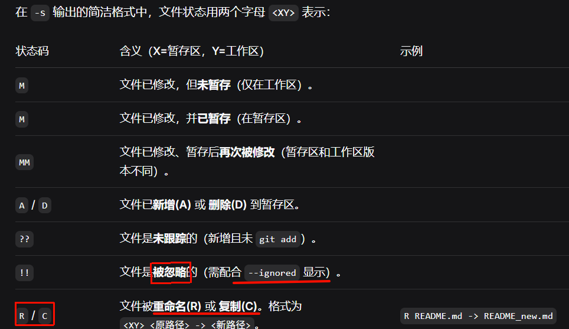
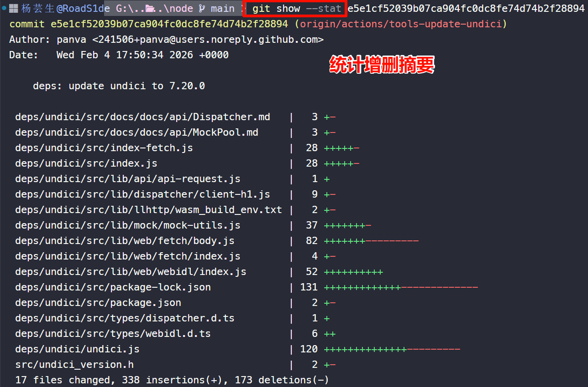
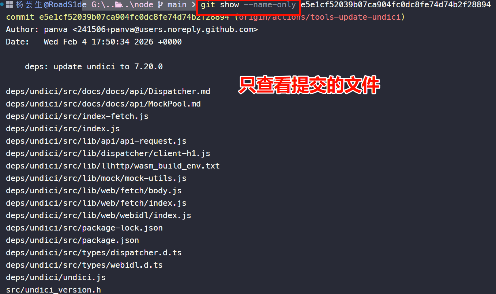
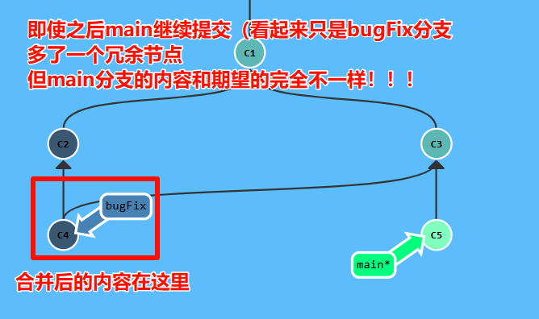
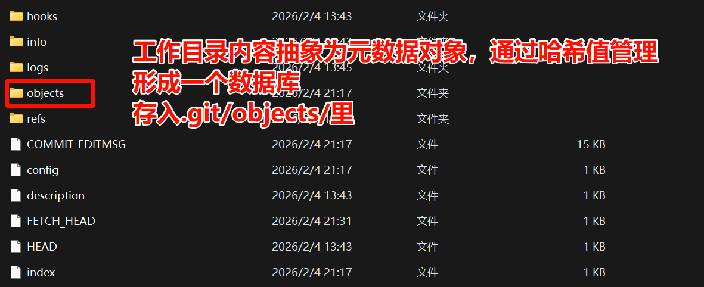

Git笔记
整理汇总
2026年2月3日软哨硬吃
Git笔记<br>整理汇总<br>2026年2月3日软哨硬吃资料汇总官方资料资源文档公司禁止vpn如何访问github三个测试Slow Startgit配置SSH配置创建仓库基本操作git pull 命令汇总提交与修改提交三剑客查看状态与差异撤销与恢复文件操作其他rebasecherry-pick提交日志提交技巧远程操作分支branch具体场景checkout分支合并远程跟踪分支我能自己指定这个属性吗？临时保存更改其他辅助命令文件状态日常使用Scenario 1Scenario 2.gitignore 文件写法分支管理创建分支查看分支合并分支解决合并冲突删除分支实例Git 分支管理列出分支删除分支分支合并合并冲突查看提交历史&标签钩子CLIWildcard注意事项公司提交规范🔄 前缀分类与作用🚀 功能相关⚡ 优化/重构相关🎨 样式和文档相关🔧 构建和工具相关🧪 测试和自动化📁 其他git在AI中使用常见面试题理论实践The End
资料汇总
项目需要多AI协同工作，对git规范提出了要求，故将所学git整理归纳。
官方资料
资源文档
Github漫游指南（优秀笔记）：Home Page
Monorepo：5分钟搞懂Monorepo - 简书
Learning Git Branching: https://learngitbranching.js.org/?locale=zh_CN (帮助学习 Git 分支用法)
FastGitHub 加速原理
FastGitHub运行在本机/局域网的 GitHub 加速工具，通过ip测速、接管 DNS + 反向代理的方式，提升国内访问 GitHub 的速度，解决打不开、git clone/push 失败等问题
修改本机的
DNS服务解析匹配的域名为
FastGithub的 IP请求安全
DNS服务 (dnscrypt-proxy) 获取相应域名的IP选择最优的
IP进行SSH或HTTPS反向代理
公司禁止vpn如何访问github
获取最新ip：https://raw.hellogithub.com/hosts
更换dns并刷新
C:\Windows\System32\drivers\etc\
三个测试
Slow Start
git配置
我の配置文件
直接编辑文件比用命令更便捷，Linux在
~/.gitconfig，win在C:\Users\<用户名>\.gitconfig。🦜
x1[user]2name = RoadS1de # 提交时显示的用户名，和github账号无关，可以随便填3email = wpp147@foxmail.com # 提交时显示的邮箱地址4# 凭证管理配置6[credential]7helper = store # https凭证明文存储在 ~/.git-credentials 文件中，实现HTTPS仓库免密8# HTTP/HTTPS 传输配置10[http]11sslbackend = openssl # 使用 OpenSSL 作为 SSL 后端12sslVerify = false # 禁用 SSL 证书验证（内网无所谓，外网可能存在安全风险）13postBuffer = 524288000 # POST 缓冲区大小设为 500MB，用于大文件推送14lowSpeedLimit = 0 # 最低速度限制设为 0（无限制）15lowSpeedTime = 999999 # 低速时间限制设为极大值，防止超时16version = HTTP/1.1 # 使用 HTTP/1.1 协议版本17# diff工具19[merge]20tool = bc21# 核心配置23[core]24editor = code --wait # 默认编辑器：VSCode，--wait 保证 Git 等待保存并关闭文件后才继续git25[diff]26tool = bc
（1）Git 默认文本编辑器一般是Vim， VS Code 需要重新设置
🦜
xxxxxxxxxx11git config --global core.editor "code --wait"
（2）差异分析工具
🦜
xxxxxxxxxx11git config --global merge.tool vimdiff个人更喜欢vscode，大部分人选择配置beyond compare：beyond compare(需要配置环境变量path，确保终端能打开)
（3）查看配置是否生效
🦜
xxxxxxxxxx11git config --list #配置完查看
重复的变量名来自不同的配置文件，Git 实际采用的是最后一个（比如 /etc/gitconfig 和 ~/.gitconfig）
git配置区分系统级（git的存储、缓冲区之类的设置）、用户级、项目级。
SSH配置
（1）keygen
生成一次非对称密钥，拿着私钥（身份证）到不同的电脑(公司的/个人的）都可以免密操作仓库。
一个比喻：私钥是身份证，公钥是备案信息。想去哪里就去哪里备案——公钥放github服务器、ubuntu服务器
创建仓库
官网创建再
clone在本地文件中
init——init创建库会稍微麻烦些：main和master的区别、readme、.gitignore、LICENSE等
不推荐init创建
（1）简单的操作步骤
🦜
xxxxxxxxxx31git init2git add .3git commit
基本操作
【金山文档 | WPS云文档】 git思维导图 https://www.kdocs.cn/l/cj2MO6WONIx7
（1）提交到暂存区
🦜
xxxxxxxxxx11git add .
（2）查看文件状态
查看上次提交后是否有对文件再修改？
🦜
xxxxxxxxxx11git status
（3）提交备注信息
🦜
xxxxxxxxxx11git commit -m "备注消息"
（4）查看仓库提交历史
🦜
xxxxxxxxxx11git log
（5）查看 commit 命令的可用选项
🦜
xxxxxxxxxx11git commit --help
（6）切换分支
🦜
xxxxxxxxxx11git checkout <分支名>
如果分支不存在，使用
-b选项来创建：🦜
xxxxxxxxxx11git checkout -b <分支名>
（7）合并分支
当前分支和"b1"分支合并
🦜
xxxxxxxxxx11git merge b1
（8）删除分支
安全删除
🦜
xxxxxxxxxx11git branch -d <分支名>
（9）添加远程仓库
远程仓库 "https://abc.xyz/d/e.git" 添加为 "origin"
🦜
xxxxxxxxxx11git remote add origin https://abc.xyz/d/e.git
（10）本地仓库推送到远程
🦜
xxxxxxxxxx11git push origin
（11）获取远程仓库修改
获取远程仓库" origin" 的所有修改历史记录
将提交、文件和引用从远程存储库下载到本地存储库中
🦜
xxxxxxxxxx11git fetch origin
（12）显示分支差异
显示当前分支和其他分支的差异
🦜
xxxxxxxxxx11git diff <其他分支>
git pull
pull是fetch 与 merge的组合
命令汇总
提交与修改
Git 的工作就是创建和保存你的项目的快照及与之后的快照进行对比。 下表列出了有关创建与提交你的项目的快照的命令。
提交三剑客
| 命令 | 说明 |
|---|---|
git status | 查看仓库当前的状态，显示有变更的文件 |
git add | 添加文件到暂存区 |
git commit | 提交暂存区到本地仓库，-m附带消息 |


git status -sb查看总体情况，git status -v 查看具体信息。
查看状态与差异
| 命令 | 说明 |
|---|---|
git diff | 比较文件的不同，即暂存区和工作区的差异 |
git difftool | 使用外部差异工具查看和比较文件的更改 |
git range-diff | 比较两个提交范围之间的差异 |
git show | 显示 Git 对象的详细信息 |
git show 用于查看 Git 中任意对象（提交、标签、文件、目录）的具体内容或元信息
| 命令 | 用途 | 说明 |
|---|---|---|
git show | 查看最近一次提交（HEAD） | 默认行为，快速回顾上一次改了啥 |
git show <commit哈希> | 查看指定提交的变更 | <commit> 可以是 hash、分支名、tag 等 |
git show <commit哈希>:<file> | 查看某次提交中某个文件的内容 | 不带 diff，直接输出文件快照 |
git show --name-only <commit哈希> | 只看这次提交改了哪些文件 | 快速扫描变更范围 |
git show --stat <commit哈希> | 查看统计摘要（增删行数） | 比完整 diff 更简洁 |


撤销与恢复
| 命令 | 说明 |
|---|---|
git reset | 回退版本 |
git restore （Git版本>=2.23） | 恢复或撤销文件的更改 |
git checkout | 分支切换或恢复文件 |
改了还未提交
刚修改的，改错了
恢复整个工作区：
恢复单个文件：
改了已经提交
文件操作
| 命令 | 说明 |
|---|---|
git rm | 将文件从暂存区和工作区中删除 |
git mv | 移动或重命名工作区文件 |
其他
| 命令 | 说明 |
|---|---|
git notes | 添加注释 |
git switch （Git版本>=2.23） | 更清晰地切换分支 |
| 命令 | 说明 |
|---|---|
git merge <分支名> | 将指定分支合并到当前分支 |
git mergetool | 使用默认合并工具解决冲突 |
git mergetool --tool=<工具名> | 指定合并工具解决冲突 |
merge必须确定方向！错误在bugFix分支执行merge的后果：不会丢代码，但逻辑错误
bugFix 分支包含了 main 最新内容
main 分支仍然没有 bug 修复，导致修复未上线

rebase
cherry-pick
提交日志
| 命令 | 说明 |
|---|---|
git log | 查看历史提交记录 |
git blame <file> | 以列表形式查看指定文件的历史修改记录 |
git shortlog | 生成简洁的提交日志摘要 |
git describe | 生成一个可读的字符串，该字符串基于 Git 的标签系统来描述当前的提交 |
提交技巧
只取一个提交记录
git Tag
git Describe
git commit
git cherry-pick
远程操作
| 命令 | 说明 |
|---|---|
git remote | 远程仓库操作 |
git fetch | 从远程获取代码库 |
git pull | 下载远程代码并合并 |
git push | 上传远程代码并合并 |
git submodule | 管理包含其他 Git 仓库的项目 |
分支
branch
git branch只操作“分支引用”，不涉及工作区切换、内容合并等。比如只是想打个标记（比如备份当前的进度），但不打算马上过去开发，
git branch就是一个非常安全的命令
| 命令 | 说明 |
|---|---|
git branch | 列出所有本地分支 |
git branch -a | 列出本地 + 远程分支 |
git switch -c <新分支> | 创建并切换到新分支（新版本命令） |
git branch <新分支> | 基于HEAD创建新分支（不切换！） |
git branch <分支名> <起点> | 基于指定提交或分支创建新分支。 |
git branch -d <旧分支> | 删除分支 |
git branch -m <旧分支名> <新分支名> | 重命名分支 |
git branch --show-current | 仅打印当前分支名 |
git branch --list 'feat-*' | 通配符过滤:只列出以 feat- 开头的分支 |
具体场景
| 使用场景 | 对应命令 |
|---|---|
| 基于当前工作创建一个新功能分支 | git branch feature-xxx |
创建一个分支，起点是远程的 main | git branch feature-xxx origin/main |
| 查看合并到当前分支的分支，准备清理 | git branch --merged |
刚刚修复了一个 Bug，想基于提交 a1b2c3d 创建热修复分支 | git branch hotfix a1b2c3d |
| 误操作了——想删除一个未合并分支 | git branch -D bad-branch |
| 当前分支和远程分支的对应关系 | git branch -vv |
当前分支 dev 的上游设置为 origin/develop | git branch -u origin/develop |
checkout
checkout来鹅城只办三件事
切换分支
恢复文件
检出特定提交
| 命令 | 说明 |
|---|---|
git checkout <分支名> | 切换到指定分支 |
git checkout <文件名> | 恢复文件到工作区 |
git checkout <commit哈希> | 检出特定提交 |
分支合并
git merge合并其他分支到当前分支，如 feature合并到main，所以应该记住，在分支上写完之后需要合并到main得先切换到main去。
为了 push 新变更到远程仓库，首先要包含远程仓库中最新变更（只要本地分支包含远程分支，如 o/main中最新变更，可以选择rebase 或 merge。
那么有分支的push？
merge还是rebase
开发社区里，有许多关于 merge 与 rebase 的讨论：
rebase优点:提交树很干净,所有提交都在一条线上
缺点:修改了提交树历史
比如, 提交 C1 可以被 rebase 到 C3 之后。这看起来 C1 中的工作是在 C3 之后进行的，但实际上是在 C3 之前。
一些开发人员喜欢保留提交历史，更偏爱 merge；有的可能更喜欢干净的提交树，于是偏爱 rebase。
远程跟踪分支
在前几节课程中有件事儿挺神奇的，Git 好像知道 main 与 o/main 是相关的。当然这些分支的名字是相似的，可能会让你觉得是依此将远程分支 main 和本地的 main 分支进行了关联。这种关联在以下两种情况下可以清楚地得到展示：
pull 操作时, 提交记录会被先下载到 o/main 上，之后再合并到本地的 main 分支。隐含的合并目标由这个关联确定的。
push 操作时, 我们把工作从
main推到远程仓库中的main分支(同时会更新远程分支o/main) 。这个推送的目的地也是由这种关联确定的！远程跟踪
直接了当地讲，
main和o/main的关联关系就是由分支的“remote tracking”属性决定的。main被设定为跟踪o/main—— 这意味着为main分支指定了推送的目的地以及拉取后合并的目标。你可能想知道
main分支上这个属性是怎么被设定的，你并没有用任何命令指定过这个属性呀！好吧, 当你克隆仓库的时候, Git 就自动帮你把这个属性设置好了。当你克隆时, Git 会为远程仓库中的每个分支在本地仓库中创建一个远程分支（比如
o/main）。然后再创建一个跟踪远程仓库中活动分支的本地分支，默认情况下这个本地分支会被命名为main。克隆完成后，你会得到一个本地分支（如果没有这个本地分支的话，你的目录就是“空白”的），但是可以查看远程仓库中所有的分支（如果你好奇心很强的话）。这样做对于本地仓库和远程仓库来说，都是最佳选择。
这也解释了为什么会在克隆的时候会看到下面的输出：
xxxxxxxxxx11local branch "main" set to track remote branch "o/main"
我能自己指定这个属性吗？
当然可以啦！你可以让任意分支跟踪 o/main, 然后该分支会像 main 分支一样得到隐含的 push 目的地以及 merge 的目标。 这意味着你可以在分支 totallyNotMain 上执行 git push，将工作推送到远程仓库的 main 分支上。
有两种方法设置这个属性，第一种就是通过远程分支切换到一个新的分支，执行:
xxxxxxxxxx11git checkout -b totallyNotMain o/main
就可以创建一个名为 totallyNotMain 的分支，它跟踪远程分支 o/main。
临时保存更改
| 命令 | 说明 |
|---|---|
git stash | 保存当前未提交的更改 |
git stash pop | 恢复最近保存的更改 |
git stash list | 列出所有保存的更改 |
其他辅助命令
| 命令 | 说明 |
|---|---|
git log | 显示提交历史 |
git log --oneline | 以简洁模式显示提交历史 |
git tag | 列出所有标签 |
git tag <标签名> | 创建新标签 |
git tag -d <标签名> | 删除标签 |
git worktree add <路径> <分支名> | 在指定路径添加新工作区并切换分支 |
git worktree remove <路径> | 删除工作区 |
文件状态
配合工作区、暂存区、本地仓库、远程仓库理解。
（1）未跟踪（Untracked）
新建文件，Git 尚未跟踪
🦜
xxxxxxxxxx11touch file.txt
（2）已跟踪（Tracked）
git add后，文件加入版本控制（暂存区）🦜
xxxxxxxxxx11git add file.txt
（3）已修改（Modified）
已跟踪文件被修改，但还未暂存
🦜
xxxxxxxxxx11echo "update" > file.txt
（4）已暂存（Staged）
git add放入暂存区，准备提交🦜
xxxxxxxxxx11git add file.txt
（5）已提交（Committed）
git commit暂存内容保存到本地仓库🦜
xxxxxxxxxx11git commit -m "message"
日常使用
Scenario 1
模拟初入公司的git使用
（1）克隆仓库
参与一个已有项目，首先克隆远程仓库到本地
🦜
xxxxxxxxxx11git clone https://github.com/username/repo.git #或ssh仓库
（2）创建新分支
通常创建一个新分支，避免直接在 master 分支开发
🦜
xxxxxxxxxx11git checkout -b new-feature
（3）暂存文件
修改过的文件添加到暂存区
🦜
xxxxxxxxxx31git add filename2# 添加工作区所有修改的文件3git add .
（4）提交更改
提交到本地仓库，并备注
🦜
xxxxxxxxxx11git commit -m "我是无情的备注信息"
（5）拉取最新更改
在推送本地更改之前，最好从远程仓库拉取最新的更改，以避免冲突
🦜
xxxxxxxxxx31git pull origin main2# 或者如果在新的分支上工作3git pull origin new-feature
（6）推送更改
将本地的提交推送到远程仓库
🦜
xxxxxxxxxx11git push origin new-feature
（7）创建 Pull Request
在 GitHub/其他平台上创建
Pull Request/Merge Request（GitLab 可能的叫法），邀请团队成员代码审查。PR 后更改合并到主分支
（8）合并更改
远程仓库主分支合并到本地分支
🦜
xxxxxxxxxx31git checkout main2git pull origin main3git merge new-feature
（9）删除分支
删除本地不再需要的功能分支
🦜
xxxxxxxxxx11git branch -d new-feature或从远程仓库删除分支：
🦜
xxxxxxxxxx11git push origin --delete new-feature
Scenario 2
解决代码冲突
（1）冲突产生原因
两个分支修改了同一文件的同一部分或同一文件名，在合并时 Git 无法自动决定保留哪个版本
（2）合并前先获取
在合并前先获取远程最新代码，查看差异
🦜
xxxxxxxxxx81# 获取远程仓库的最新信息（不会自动合并）2git fetch origin3# 查看本地分支和远程分支的差异5git diff origin/main6# 查看远程分支列表8git branch -r
（3）发现冲突
尝试合并或拉取时，Git 会提示冲突
🦜
xxxxxxxxxx81git pull origin main2# 或3git merge feature-branch4# 输出类似：6# Auto-merging file.txt7# CONFLICT (content): Merge conflict in file.txt8# Automatic merge failed; fix conflicts and then commit the result.
（4）查看冲突文件
使用 status 查看哪些文件存在冲突
🦜
xxxxxxxxxx51git status2# 输出会显示：4# Unmerged paths:5# both modified: file.txt
（5）解决冲突步骤
a. 沟通优先：与另一位开发者沟通，商定代码取舍方案
b. 打开冲突文件：Git 会在文件中标记冲突区域
xxxxxxxxxx51<<<<<<< HEAD2你的代码3=======4别人的代码5>>>>>>> feature-branchc. 手动编辑：删除冲突标记，保留需要的代码
d. 标记为已解决：将修改后的文件添加到暂存区
e. 完成合并：提交解决冲突后的代码
🦜
xxxxxxxxxx21git commit -m "解决与 feature-branch 的合并冲突"2git push origin main
（6）放弃合并
取消本次合并，恢复到合并前状态
🦜
xxxxxxxxxx31git merge --abort2# 或取消 pull 操作3git reset --hard HEAD
（8）预防冲突的最佳实践
频繁拉取远程代码：
git pull origin main保持同步小步提交：避免一次性修改大量文件
及时推送：不要长时间不推送本地代码
分工明确：团队成员尽量避免同时修改同一文件
使用 rebase：
git pull --rebase保持整洁的提交历史
.gitignore 文件写法
(1) 通配符
#是注释，会被git忽略，空行无实际意义
test.txt忽略根目录下的test.txt。
src/test.txt忽略src目录下的test.txt
*：匹配任意个字符（0个或多个），但不包含目录分隔符/。
?：匹配任意单个字符。
**：匹配任意层级的目录。
**/build-> 忽略任何位置下的build目录或文件（如src/build,build,a/b/c/build）。
(2) 例：Cmake项目管理
cmake通常屏蔽build目录下所有内容、生成的临时文件等
🦜
xxxxxxxxxx231# CMake 生成文件2CMakeCache.txt3CMakeFiles/4cmake_install.cmake5Makefile6*.cmake7!CMakeLists.txt # 确保不忽略CMakeLists.txt本身8# 屏蔽任何层级下的 build 目录（推荐，更全面）11**/build/12# 屏蔽常见的 IDE 构建目录（如 CLion 自动生成的）14cmake-build-*/15# 编译器生成的临时文件18*.o19*.a20*.so21*.dylib22*.exe23*.out
分支管理
Git 分支管理是 Git 强大功能之一，能够让多个开发人员并行工作，开发新功能、修复 bug 或进行实验，而不会影响主代码库。
几乎每一种版本控制系统都以某种形式支持分支，一个分支代表一条独立的开发线。
使用分支意味着你可以从开发主线上分离开来，然后在不影响主线的同时继续工作。

Git 分支实际上是指向更改快照的指针。
有人把 Git 的分支模型称为必杀技特性，而正是因为它，将 Git 从版本控制系统家族里区分出来。
创建分支
创建新分支并切换到该分支：
xxxxxxxxxx11git checkout -b <branchname>
例如：
xxxxxxxxxx11git checkout -b feature-xyz
切换分支命令:
xxxxxxxxxx11git checkout (branchname)
例如：
xxxxxxxxxx11git checkout main
当你切换分支的时候，Git 会用该分支的最后提交的快照替换你的工作目录的内容， 所以多个分支不需要多个目录。
查看分支
查看所有分支：
xxxxxxxxxx11git branch
查看远程分支：
xxxxxxxxxx11git branch -r
查看所有本地和远程分支：
xxxxxxxxxx11git branch -a
合并分支
将其他分支合并到当前分支：
xxxxxxxxxx11git merge <branchname>
例如，切换到 main 分支并合并 feature-xyz 分支：
xxxxxxxxxx21git checkout main2git merge feature-xyz
解决合并冲突
当合并过程中出现冲突时，Git 会标记冲突文件，你需要手动解决冲突。
打开冲突文件，按照标记解决冲突。
标记冲突解决完成：
xxxxxxxxxx11git add <conflict-file>
提交合并结果：
xxxxxxxxxx11git commit
删除分支
删除本地分支：
xxxxxxxxxx11git branch -d <branchname>
强制删除未合并的分支：
xxxxxxxxxx11git branch -D <branchname>
删除远程分支：
xxxxxxxxxx11git push origin --delete <branchname>
实例
远程分支
偏离的提交历史
locked main
开始前我们先创建一个测试目录：
xxxxxxxxxx101$ mkdir gitdemo2$ cd gitdemo/3$ git init4Initialized empty Git repository...5$ touch README6$ git add README7$ git commit -m '第一次版本提交'8[master (root-commit) 3b58100] 第一次版本提交91 file changed, 0 insertions(+), 0 deletions(-)10create mode 100644 README
Git 分支管理
列出分支
列出分支：
xxxxxxxxxx11git branch
没有参数时，git branch 会列出你在本地的分支。
xxxxxxxxxx21$ git branch2* master
此例的意思就是，我们有一个叫做 master 的分支，并且该分支是当前分支。
当你执行 git init 的时候，默认情况下 Git 就会为你创建 master 分支。
如果我们要手动创建一个分支。执行 git branch (branchname) 即可。
xxxxxxxxxx41$ git branch testing2$ git branch3* master4testing
现在我们可以看到，有了一个新分支 testing。
当你以此方式在上次提交更新之后创建了新分支，如果后来又有更新提交， 然后又切换到了 testing 分支，Git 将还原你的工作目录到你创建分支时候的样子。
接下来我们将演示如何切换分支，我们用 git checkout (branch) 切换到我们要修改的分支。
xxxxxxxxxx141$ ls2README3$ echo 'runoob.com' > test.txt4$ git add .5$ git commit -m 'add test.txt'6[master 3e92c19] add test.txt71 file changed, 1 insertion(+)8create mode 100644 test.txt9$ ls10README test.txt11$ git checkout testing12Switched to branch 'testing'13$ ls14README
当我们切换到 testing 分支的时候，我们添加的新文件 test.txt 被移除了。切换回 master 分支的时候，它们又重新出现了。
xxxxxxxxxx41$ git checkout master2Switched to branch 'master'3$ ls4README test.txt
我们也可以使用 git checkout -b (branchname) 命令来创建新分支并立即切换到该分支下，从而在该分支中操作。
xxxxxxxxxx191$ git checkout -b newtest2Switched to a new branch 'newtest'3$ git rm test.txt4rm 'test.txt'5$ ls6README7$ touch runoob.php8$ git add .9$ git commit -am 'removed test.txt、add runoob.php'10[newtest c1501a2] removed test.txt、add runoob.php112 files changed, 1 deletion(-)12create mode 100644 runoob.php13delete mode 100644 test.txt14$ ls15README runoob.php16$ git checkout master17Switched to branch 'master'18$ ls19README test.txt
如你所见，我们创建了一个分支，在该分支上移除了一些文件 test.txt，并添加了 runoob.php 文件，然后切换回我们的主分支，删除的 test.txt 文件又回来了，且新增加的 runoob.php 不存在主分支中。
使用分支将工作切分开来，从而让我们能够在不同开发环境中做事，并来回切换。
删除分支
删除分支命令：
xxxxxxxxxx11git branch -d (branchname)
例如我们要删除 testing 分支：
xxxxxxxxxx71$ git branch2* master3testing4$ git branch -d testing5Deleted branch testing (was 85fc7e7).6$ git branch7* master
分支合并
一旦某分支有了独立内容，你终究会希望将它合并回到你的主分支。 你可以使用以下命令将任何分支合并到当前分支中去：
xxxxxxxxxx161git merge2$ git branch3* master4newtest5$ ls6README test.txt7$ git merge newtest8Updating 3e92c19..c1501a29Fast-forward10runoob.php | 011test.txt | 1 -122 files changed, 1 deletion(-)13create mode 100644 runoob.php14delete mode 100644 test.txt15$ ls16README runoob.php
以上实例中我们将 newtest 分支合并到主分支去，test.txt 文件被删除。
合并完后就可以删除分支:
xxxxxxxxxx21$ git branch -d newtest2Deleted branch newtest (was c1501a2).
删除后， 就只剩下 master 分支了：
xxxxxxxxxx21$ git branch2* master
合并冲突
合并并不仅仅是简单的文件添加、移除的操作，Git 也会合并修改。
xxxxxxxxxx31$ git branch2* master3$ cat runoob.php
注意：如果没有 runoob.php，需要先创建这个文件，命令可以是 touch runoob.php。
首先，我们创建一个叫做 change_site 的分支，切换过去，我们将 runoob.php 内容改为:
xxxxxxxxxx31<?php2echo 'runoob';3?>
创建 change_site 分支：
xxxxxxxxxx111$ git checkout -b change_site2Switched to a new branch 'change_site'3$ vim runoob.php4$ head -3 runoob.php5<?php6echo 'runoob';7?>8$ git commit -am 'changed the runoob.php'9[change_site 7774248] changed the runoob.php101 file changed, 3 insertions(+)11
vim 命令操作可以参阅：Linux vi/vim。
将修改的内容提交到 change_site 分支中。 现在，假如切换回 master 分支我们可以看内容恢复到我们修改前的(空文件，没有代码)，我们再次修改 runoob.php 文件。
xxxxxxxxxx201$ git checkout master2Switched to branch 'master'3$ cat runoob.php4$ vim runoob.php # 修改内容如下5$ cat runoob.php6<?php7echo 1;8?>9$ git diff10diff --git a/runoob.php b/runoob.php11index e69de29..ac60739 10064412--- a/runoob.php13+++ b/runoob.php14@@ -0,0 +1,3 @@15+<?php16+echo 1;17+?>18$ git commit -am '修改代码'19[master c68142b] 修改代码201 file changed, 3 insertions(+)
现在这些改变已经记录到我的 "master" 分支了。接下来我们将 "change_site" 分支合并过来。
xxxxxxxxxx131$ git merge change_site2Auto-merging runoob.php3CONFLICT (content): Merge conflict in runoob.php4Automatic merge failed; fix conflicts and then commit the result.5$ cat runoob.php # 打开文件，看到冲突内容7<?php8<<<<<<< HEAD9echo 1;10=======11echo 'runoob';12>>>>>>> change_site13?>
我们将前一个分支合并到 master 分支，一个合并冲突就出现了，接下来我们需要手动去修改它。
xxxxxxxxxx161$ vim runoob.php2$ cat runoob.php3<?php4echo 1;5echo 'runoob';6?>7$ git diff8diff --cc runoob.php9index ac60739,b63d7d7..000000010--- a/runoob.php11+++ b/runoob.php12@@@ -1,3 -1,3 +1,4 @@@13<?php14+echo 1;15+ echo 'runoob';16?>
在 Git 中，我们可以用 git add 要告诉 Git 文件冲突已经解决
xxxxxxxxxx71$ git status -s2UU runoob.php3$ git add runoob.php4$ git status -s5M runoob.php6$ git commit7[master 88afe0e] Merge branch 'change_site'
现在我们成功解决了合并中的冲突，并提交了结果。
查看提交历史&标签
钩子
1
CLI
Wildcard注意事项
Shell 会自动展开未转义的通配符：
git restore *.c→ Shell 展开为具体文件列表git restore \*.c或git restore '*.c'→ Git 自己匹配索引中的路径
两者行为不同，尤其在文件已被删除但仍在索引中时。
1. *基本参数顺序*
选项（options）在前，参数（arguments）在后 例如：
git commit -m "msg" file.txt修订版本（revisions）在前，路径（paths）在后 例如：
git diff v1.0 v2.0 src/
避免歧义：使用 -- 分隔符 当参数可能被误认为是修订或路径时，用 -- 明确分隔： git diff -- HEAD → 比较工作区中名为 HEAD 的文件 git diff HEAD -- → 比较 HEAD 提交与整个工作区 在脚本中处理用户输入时，强烈建议显式使用 -- 避免歧义。 ⚠️ 注意：-- 不能用于分隔选项和修订（此时应使用 --end-of-options）。 . 魔法文件名选项 支持 : 前缀表示“可选文件”： bash
编辑
git commit -F :COMMIT_EDITMSG
公司提交规范
提交原则
单一职责：每次提交只能包含同一类别，不混合不同类型
小而清晰：每次提交不能超过 3 个问题，确保改动明确
信息规范：提交信息必须使用指定前缀和简洁描述
🔄 前缀分类与作用
🚀 功能相关
feat- 新增功能或页面示例：
feat: 增加用户登录功能
fix- 修复 Bug 或问题示例：
fix: 修复登录页面的登录失败Bug
modify- 修改已有功能示例：
modify: 修改订单页面的支付功能
delete- 删除功能或文件示例：
delete: 删除旧版支付页面
⚡ 优化/重构相关
perf- 优化代码或性能改进示例：
perf: 提升查询性能
refactor- 重构代码，不涉及功能新增或 Bug 修复示例：
refactor: 重构用户管理模块
🎨 样式和文档相关
style- 代码风格变动，和功能无关示例：
style: 规范化代码缩进和格式
docs- 文档修改或注释变更示例：
docs: 更新API使用文档
🔧 构建和工具相关
build- 构建工具或依赖相关的更改示例：
build: 添加webpack配置
chore- 非 src/test 的项目配置修改示例：
chore: 更新依赖库
ci- 持续集成配置相关的修改示例：
ci: 修改GitHub Actions的构建流程
🧪 测试和自动化
test- 新增或修改测试用例示例：
test: 添加用户模块的单元测试
workflow- 工作流改进示例：
workflow: 优化CI工作流
📁 其他
revert- 撤销某次提交示例：
revert: 回滚上次对登录功能的修改
types- 修改类型定义文件示例：
types: 更新TypeScript类型定义
wip- 开发中，未完成的提交示例：
wip: 初始化用户管理功能
git在AI中使用
常见面试题
理论
（1）简述 Git 的原理和工作流程
Git 是一个分布式版本控制系统，存储每次提交的快照而非只存储有差异的地方
Git 的分布式是它和其他版本控制系统的核心区别：如 SVN、CVS 等

（2）什么是版本控制系统/为什么需要版本控制系统？
跟踪项目变化，回溯、协作开发、管理不同版本
（3）git fetch 和 git pull 命令的区别？
git fetch：从远程仓库获取最新数据，但不自动合并到本地分支，仅更新远程分支信息
git pull：相当于git fetch+git merge，会拉取并自动合并远程分支到当前分支
（4）git rebase 和 git merge 命令的区别？
git merge：将两个分支的历史合并为一个，保留完整的历史记录，形成"分叉"结构
git rebase：将当前分支的提交"重放"到目标分支上，使历史线性化，看起来像是连续提交，但会修改提交历史
（5）什么是 Git Flow，它有什么好处？
标准化分支管理策略与扩展命令，分支包含主干（main/master）、开发（develop）、功能（feature）、发布（release）和热修复（hotfix），适合大型项目迭代，但小型项目一天多次发布反而冗余
（6）什么是暂存区？Git 为什么需要暂存区？
可以通过暂存区精细控制提交内容，实现部分提交
实践
（1）分享下你团队中使用 Git 协作开发流程（从拉取项目到上线）
典型流程：克隆仓库 → 创建功能分支 → 开发并提交 → 推送分支 → 提交 PR（Pull Request） → 审查代码 → 合并到 develop 或 main → 构建部署 → 上线
（2）如何控制某些文件不被提交？
使用
.gitignore文件列出不需要版本控制的文件/目录（如日志、临时文件、配置文件等）
（3）什么情况下提交会冲突，如何解决冲突？
冲突情况：修改了同一文件的相同行时
解决方式：最快就是交流选择保留的内容
（4）改错了代码、删除了文件，如何恢复？
改错代码：使用
git checkout HEAD -- <file>恢复文件到最近提交状态删除文件：使用
git restore <file>或git checkout HEAD -- <file>恢复。若已提交，可使用git reset或git revert回滚
（5）提交错文件，如何处理？
尚未推送：使用
git reset HEAD~1撤销最近一次提交已经推送：使用
git revert创建一个新的反向提交，或git reset --hard（谨慎使用）
（6）团队开发中，如何区分和管理分支？
采用规范命名（如
feature/login、bugfix/timeout），结合 Git Flow 或 GitHub Flow。使用分支保护规则、PR 审查机制，确保代码质量
（7）你负责团队如何管理项目代码？
制定统一的开发规范、分支策略、代码审查流程；引入 CI/CD 自动化测试；定期进行代码重构与技术评审；使用权限管理控制访问
（8）如何防止错误代码提交？
使用
.gitignore防止误提交设置预提交钩子（pre-commit hook）运行检查
强制代码审查（Code Review）
启用 CI 流程自动检测错误
建立规范的提交信息格式
强制代码审查（Code Review）
启用 CI 流程自动检测错误
建立规范的提交信息格式